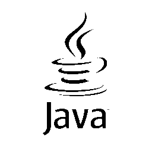
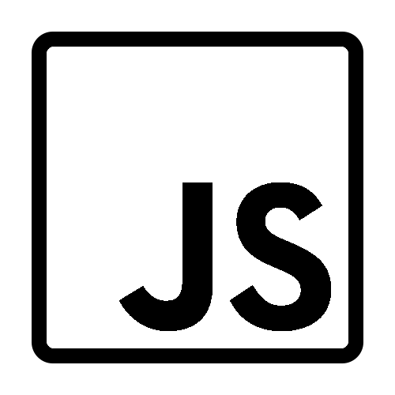
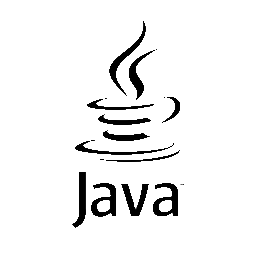
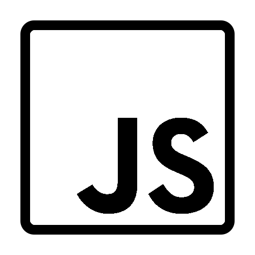

Hallo! Ik ben Douwe 👋
Hi! My name's Douwe 👋
Ik ben Douwe. ik ben een eerste-jaars student aan het Alfa-College als Software Developer. Ik volg deze opleiding sinds september 2022. Ik ben 18 jaar oud, mijn verjaardag is op 26 november en ik heb 3 honden en 3 katten. Ik heb al sinds een jonge leeftijd een gezonde obsessie met technologie, en ik kijk uit naar mijn toekomst.
Waarom Software Development ❓
Why Software Development ❓
Al sinds mijn vijfde gebruikte ik een computer. Ik begon met algemeen gebruik maar dit groeide al snel naar een goed verstand in wat allemaal mogelijk is met een computer. Als jong kind speelde ik veel video games en hierdoor maakte ik kennis met de communities van deze videogames, onder andere Minecraft. Minecraft heeft een enorme community besteed aan modding en exploiting en dit is iets waar ik mij enorm voor interesseerde. Ik raakte bevriend met mensen die hier verstand van hadden, en sindsdien heb ik altijd ook dat willen en kunnen doen. Hoe meer ik mij verdiepte in hoe coding werkte hoe meer ik er van wilde weten. Het snowball-effect is dat ik mij uiteindelijk heb aangemeld voor de opleiding Software Developer.
Ervaring 💻
Experience 💻
Ik heb mijzelf een aantal dingen aangeleerd die je hieronder kunt vinden. Deze lijst is nog lang niet af en ik wil nog veel meer leren. Op dit moment ben ik bekend met de volgende talen en applicaties:


 





Wat ik doe 😄
What I do 😄
Naast mijn opleiding en het programmeren doe ik nog meer dingen. Ik wandel graag, alleen of met anderen, of met mijn honden. Ik interesseer mij in media (ruime manier van zeggen dat ik graag Netflix kijk). Eens in de zoveel tijd ga ik naar buiten om door het bos een rondje te hardlopen. Ik houd mij bezig met het huishouden. En ik houd mij graag bezig met mijn hobbies.
Hobbies 🕹️
Ik doe veel dingen in mijn vrije tijd, maar niet alles wat ik doe is per se een hobby van mij. Ik word
erg blij van coderen in mijn vrije tijd, ik werk momenteel aan een Minecraft mod die ik samen met een
groep vrienden bouw. Ik speel voornamelijk graag video games, hier heb ik ook iets over te vertellen.
Ik speel sinds 2015
Geometry Dash.
Ik ben hier erg goed in en ik heb inmiddels over 2500 uur op dit spel op steam, maar het
totaal aantal ligt waarschijnlijk in de 7000+ omdat ik pas sinds 2019 via Steam speel (hiervoor op
mobile). Ik speel ook graag
Bloons TD 6
en
GTA V.
Ook ben ik graag bezig met coding en het leren hiervan. Ik heb in mijn vrije tijd mijzelf de basis van
Python, HTML, CSS, JavaScript, Java, C#, Kotlin & TypeScript aangeleerd in het laatste jaar.